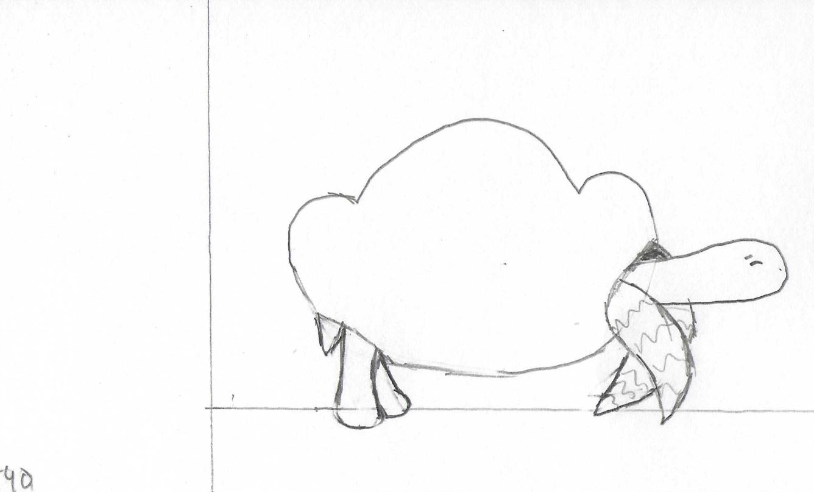

To start your animation begin drawing on paper with your chosen writing utensil. Planning out your story can be good to guide your direction with the project, but unplanned experimental projects can be good too.
Next is where the light table or the rulers will come in. You can use the light table to begin tracing your previous while changing it slightly for your next frame of animation. If you do not have a light table, you can use rules to figure out where to draw the next item!
Repeat the process of drawing and overlaying until you reach a point creatively where you feel the project is finished! Take it where you want and don't be afraid to change perspective, add characters, and have fun! Once complete you can flip the paper to see your animation move!
